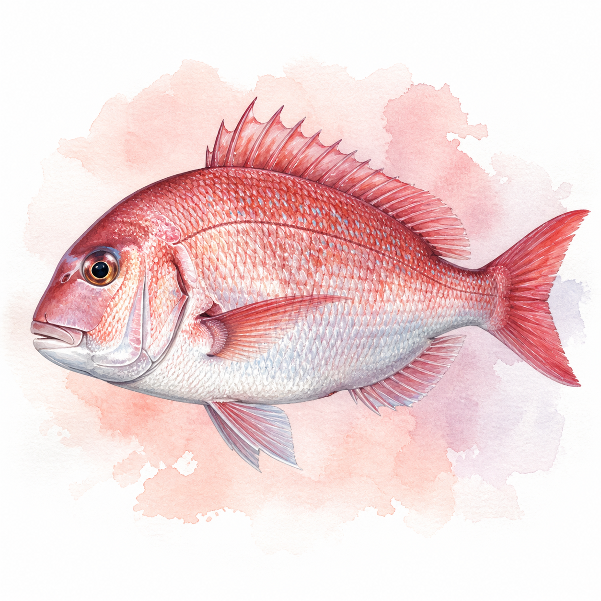

マダイ
マダイ
0〜12匹
77cm
今週 113便・53船宿
トップ › マダイ
神奈川・東京・千葉・茨城・静岡の5県の船宿を横断集計しています。
★ 今週実績あり（5魚種）
便数トップは飯岡で、一つテンヤで数型とも狙える外房の看板（一人あたり中央値9匹は主要エリア最多）。隣の大原はテンヤ発祥の聖地。松輪江奈は乗っ込みコマセの本場で、御前崎（サイズ中央値64cm）・日立久慈（同79cm）は型狙いの遠征先として価値がある。ポイントは鹿島南沖（565便）・剣崎沖・久里浜沖に実績が集中。
★ 今週実績あり（33エリア）
| 1月 | 2月 | 3月 | 4月 | 5月 | 6月 | 7月 | 8月 | 9月 | 10月 | 11月 | 12月 | |
|---|---|---|---|---|---|---|---|---|---|---|---|---|
| 数釣 | ||||||||||||
| 型釣 |
※ 過去3年の関東船釣り釣果データより集計（2023〜2025年）
乗っ込み（4〜6月）と落ちダイ（10〜12月）が二大ピーク。当サイトの過去3年・14,846便の集計でも5月（2,147便）が最多だ。ただしピークはエリアで大きくずれ、御前崎と日立久慈は11月が年間最多で、秋に型も数も伸びる。特に日立久慈は当サイト集計のサイズ中央値79cmと、関東屈指の大ダイ場になっている。春の桜鯛か、秋の大判か——時期と行き先の組み合わせで狙いを変えられる。 月ごとの詳しい振り返りは「2026年5月 マダイ釣果月報」で読める。
船釣り全般の Q&A（服装・船酔い・予約・ライフジャケット等）はよくある質問ページにまとめています。
関東マダイ船釣りの釣果は4〜5月に実績が集中しています。1〜3月・6〜12月も狙える時期です。 → エリア別のシーズン傾向を見る
関東マダイ船釣りの主なエリアは飯岡港（2385便）、御前崎港（1786便）、松輪江奈港（1737便）です。
関東マダイ船釣りの一日の釣果は2〜8匹が標準的なレンジです。中央値は4匹・上位10%の好日は13匹以上です。最高実績は76匹です（いずれも個人釣果ベース・船全体の合計数は除く）。
難易度は中級者向けの釣りです。コマセを使ったビシ釣りが主流。繊細なアタリを取る楽しさがあり、釣れたときの達成感は格別です。関東では191船宿が出船実績あり。多くの船宿でレンタルタックルや仕掛けの購入が可能です。 → 初心者向けガイドを見る
コマセビシはアミコマセで魚を寄せて長いハリスのオキアミを食わせる釣り、一つテンヤは3〜20号のテンヤにエビを付けて底を取り誘いをかける釣りです。神奈川県では条例によりマダイはコマセビシ釣りのみ認められているため、テンヤは外房・内房中心となります。乗船する船宿の釣法を必ず確認しましょう。出典: chiba-baikamaru.com、honda.co.jp
産卵のために浅場にマダイが集まる4〜6月の時期を「乗っ込み」と呼び、年間で最も大型が期待できるベストシーズンです。婚姻色で黒みがかったオスや5〜6kg級、稀に10kg超も上がります。秋（9〜11月）の落ちダイは型はやや小ぶりですが数釣りが楽しめる季節です。出典: chiba-baikamaru.com、fish.shimano.com
刺身・カルパッチョ・鯛めし・潮汁・塩焼きが定番です。釣り上げてすぐに血抜きと神経締めをしておくと身質が長持ちし、3〜4日寝かせた熟成刺身は旨味が乗ります。アラは丁寧に湯引きして潮汁にするとお吸い物として絶品です。皮目はバーナーで炙る霜造りもおすすめ。出典: point-i.jp
